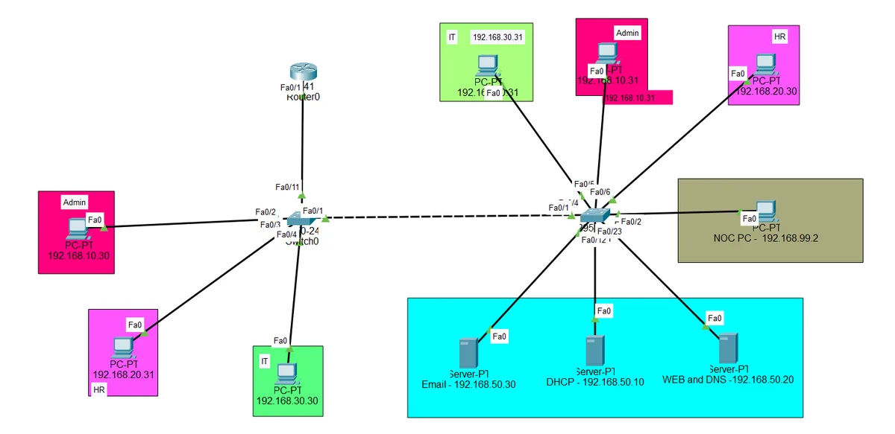
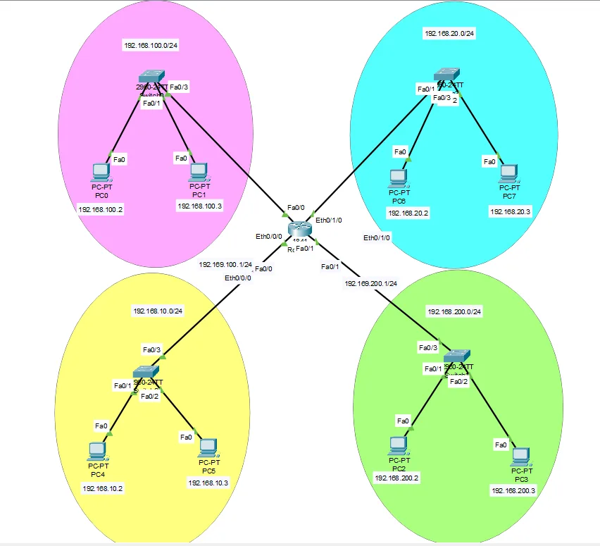
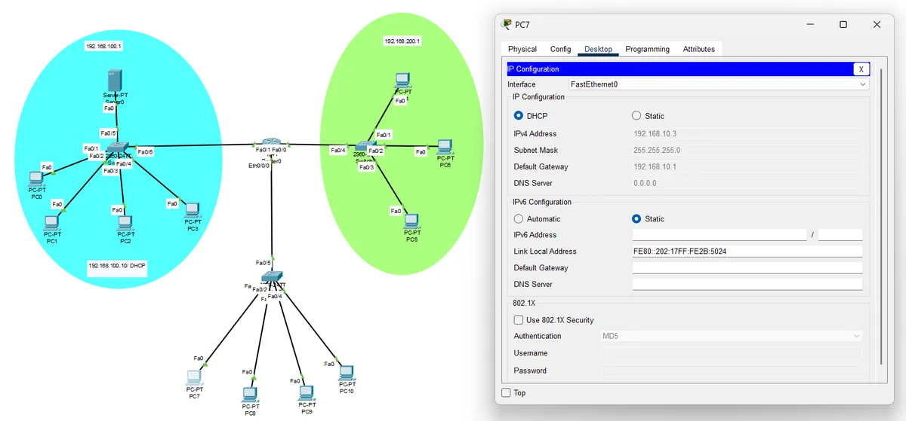
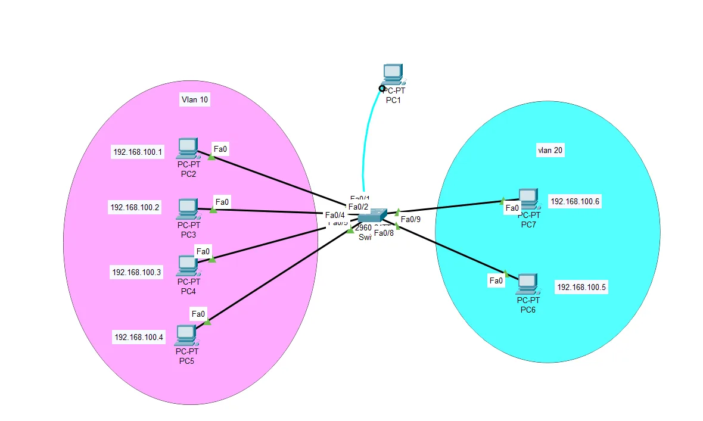
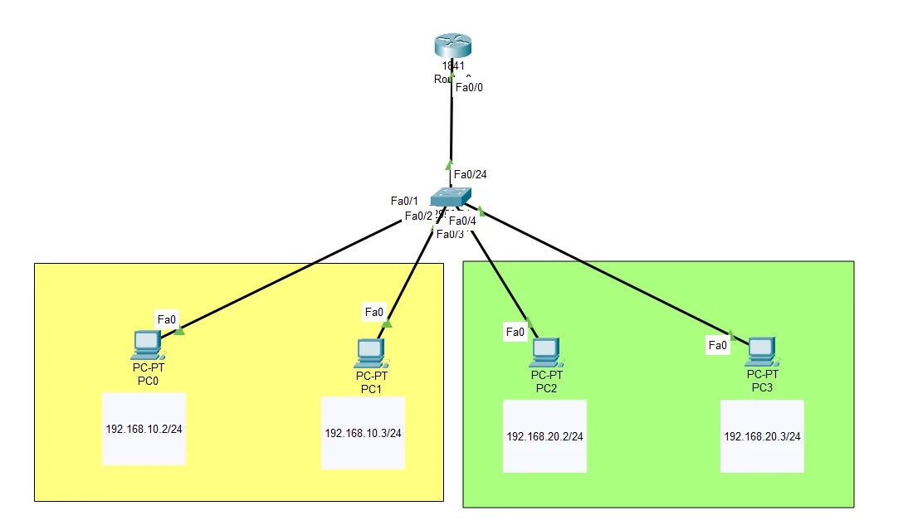
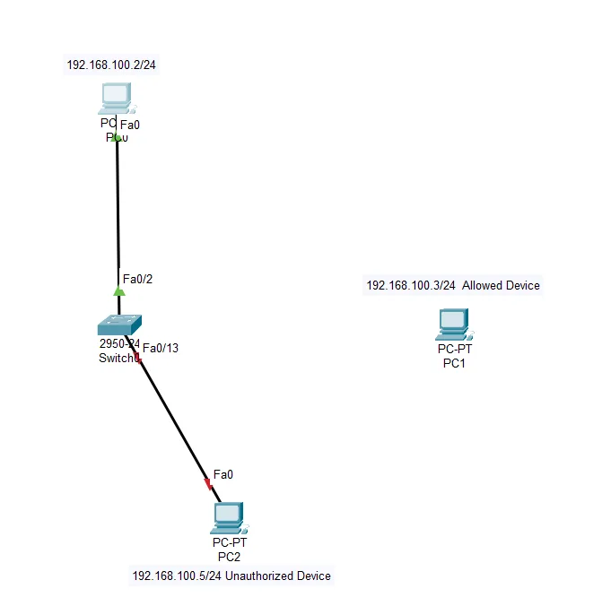

Packet Tracer Networking Labs
15+ Cisco Packet Tracer labs with working files and step-by-step guides, from a first LAN to an enterprise design.
- Cisco Packet Tracer
- VLAN
- DHCP/DNS
- ACL & SSH
- RoleAuthor
- ContextNDICT (NVQ Level 5) networking practicals
- ToolCisco Packet Tracer 8.1+
- Size15+ labs, each with a .pkt file

What this is
While studying for my NDICT (NVQ Level 5), I turned my networking practicals into a practical book in Cisco Packet Tracer: 15+ labs and projects, from a first LAN to a full enterprise network design.
Every lab comes with the .pkt file, so you can open a working network, read the configuration, break it and fix it. Each lab also has its own step-by-step guide with verification commands.
The sections
| Section | What it covers | Labs |
|---|---|---|
| Basic connectivity | LAN topology and routing basics | 1 |
| Network services | DHCP, DNS, web and mail servers | 5 |
| VLANs and switching | VLANs, VTP and inter-VLAN routing | 4 |
| Security and remote access | Telnet and port security | 2 |
| Wireless and IoT | Wi-Fi and smart devices | 2 |
| Final projects | Enterprise design and an 80-workstation proposal | 2 |
Highlights





Capstone and the 80-workstation design
The TechNova enterprise network is a hierarchical design for a fictional mid-sized company: VLANs per department, routing, port security, ACLs, SSH, network services and wireless. My NVQ final proposal, a network lab for 80 workstations for an IT institute with three computer labs, is in its own repository with a cost estimate.
Explore the 80-workstation network in 3D · proposal on GitHub
How to use the labs
- Get Cisco Packet Tracer free from Cisco Networking Academy (the labs use 8.1 or newer).
- Clone the repository or download it as a ZIP.
- Open a lab folder, double-click the
.pktfile and follow that folder's guide.
Tip: use Simulation mode to watch packets move hop by hop, and break a lab on purpose, then use the show commands from the guide to find the fault.